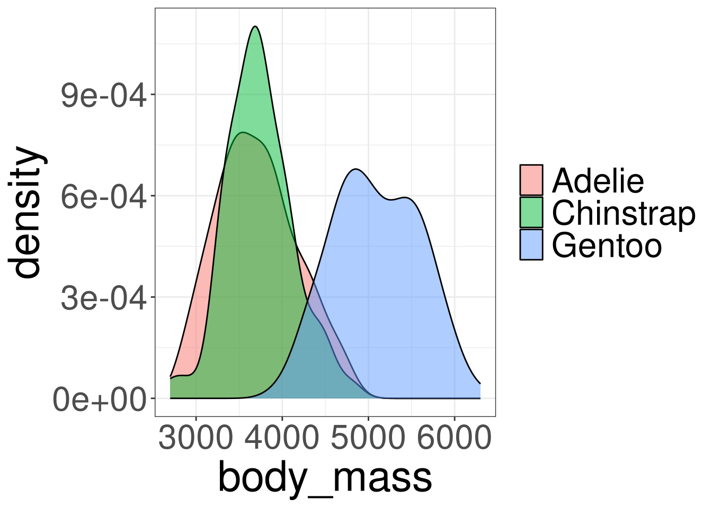
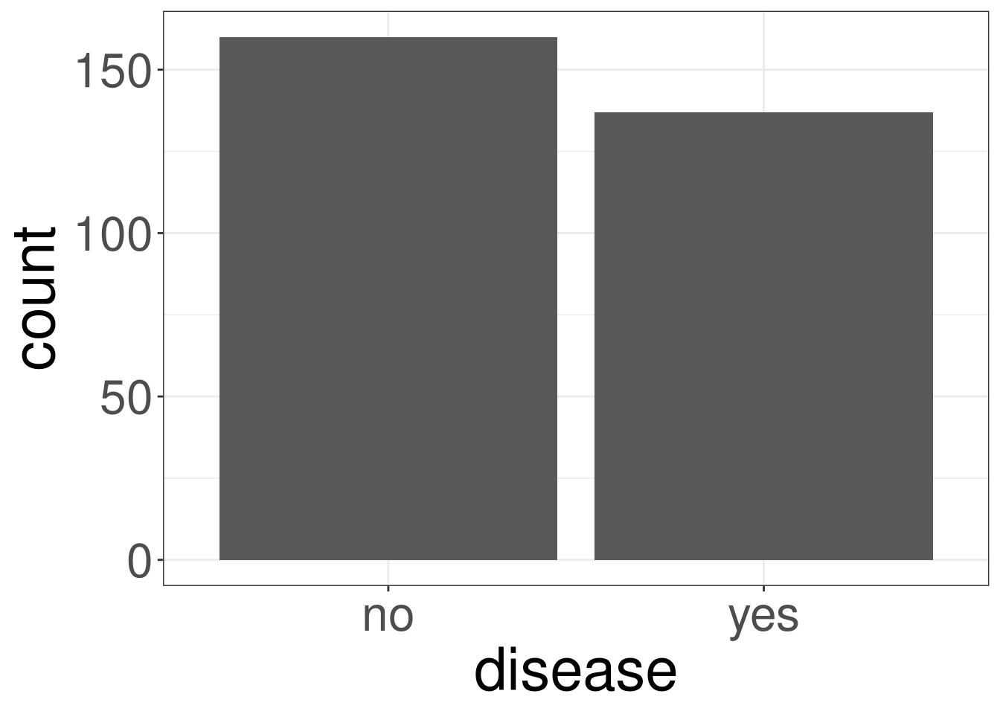

Group
Regression
R Packages
- rcistats
- tidyverse
Palmer Penguins Data
Variables of Interest
species: Penguin speciesbody_mass: Body mass in grams

Heart Disease Data
Variables of Interest
thal: Thallium stress test resultdisease: Indicating if they have heart disease

Modeling Relationships
Modeling Relationships
Group Statistics
Group Models
Group Models in R
LM Example
GLM Example
Explaining Continuous Variables

Linear: Categorical Variables
Explainging Binary Variables
Logistic: Categorical Variables

Group Statistics
Modeling Relationships
Group Statistics
Group Models
Group Models in R
LM Example
GLM Example
Group Statistics
We can use statistics to explain a variable by the categories.
Compute statistics for each group.
Continuous Data
NUM: Name of the numerical variableCAT: Name of the categorical variableDATA: Name of the data frame
Continous Data
#> Categories min q25 mean median q75 max sd var iqr
#> 1 Adelie 2850 3362.5 3706.164 3700 4000 4775 458.620 210332.4 637.5
#> 2 Chinstrap 2700 3487.5 3733.088 3700 3950 4800 384.335 147713.5 462.5
#> 3 Gentoo 3950 4700.0 5092.437 5050 5500 6300 501.476 251478.3 800.0
#> missing
#> 1 0
#> 2 0
#> 3 0Continuous Data
OR
Y: Name of the outcome variableX: Name of the categorical variableDATA: Name of the data frame
Binary Data
Group Models
Modeling Relationships
Group Statistics
Group Models
Group Models in R
LM Example
GLM Example
G/LM with Categorical Variables
A line is normally used to model 2 continuous variables.
However, the predictor variable \(X\) can be restricted to a set a dummy variables that can symbolize categories.
A category from \(X\) will be used as a reference for a model.
LM Example
\[ body\_mass = \beta_0 + \boldsymbol \beta (species) \]
\[ body\_mass = \beta_0 + \beta_1 (Chinstrap) + \beta_2 (Gentoo) \]
\(Chinstrap\) and \(Gentoo\) are both dummy variables that will reference Adelie
GLM Example
\[ lo(disease) = \beta_0 + \boldsymbol \beta (thal) \]
\[ lo(disease) = \beta_0 + \beta_1 (Fixed) + \beta_2 (Reversible) \]
\(Fixed\) and \(Reversible\) defects are both dummy variables that will reference Normal
Dummy Variables
To fit a model with categorical variables, we must utilize dummy (binary) variables that indicate which category is being referenced. We use \(C-1\) dummy variables where \(C\) indicates the number of categories. When coded correctly, each category will be represented by a combination of dummy variables.
Dummy Variables
Binary variables are variable that can only take on the value 0 or 1.
\[ D_i = \left\{ \begin{array}{cc} 1 & Category\\ 0 & Other \end{array} \right. \]
Example
If we have 4 categories, we will need 3 dummy variables:
| Cat 1 | Cat 2 | Cat 3 | Cat 4 | |
|---|---|---|---|---|
| Dummy 1 | 1 | 0 | 0 | 0 |
| Dummy 2 | 0 | 1 | 0 | 0 |
| Dummy 2 | 0 | 0 | 1 | 0 |
Species Dummy Variables
| DUMMY | Chinstrap | Gentoo | Adelie (Reference) |
|---|---|---|---|
| \(Chinstrap\) | 1 | 0 | 0 |
| \(Gentoo\) | 0 | 1 | 0 |
Thal Dummy Variables
| DUMMY | Fixed Defect | Reversible Defect | Normal (Reference) |
|---|---|---|---|
| \(Fixed\) | 1 | 0 | 0 |
| \(Reversible\) | 0 | 1 | 0 |
LM: Penguins
\[ body\_mass = \hat \beta_0 + \hat\beta_1 (Chinstrap) + \hat\beta_2 (Gentoo) \]
\(\hat \beta_1\) indicates how body mass changes from Adelie to Chinstrap.
\(\hat \beta_2\) indicates how body mass changes from Adelie to Gentoo.
\(\hat \beta_0\) represents the baseline level, in this case the body mass of Adelie.
GLM: Penguins
\[ lo(disease) = \hat \beta_0 + \hat\beta_1 (Fixed) + \hat\beta_2 (Reversible) \]
\(\hat \beta_1\) indicates how \(lo(disease)\) changes from Normal to Fixed.
\(\hat \beta_2\) indicates how \(lo(disease)\) changes from Normal to Reversible.
\(\hat \beta_0\) represents the baseline level, in this case the \(lo(disease)\) of Normal.
Interepreting \(\beta\)
Interpreting \(\beta\) for categorical variables are different from continuous (numeric) variables. Interpreting \(\beta\)s only allow us to make comparisons between the dummy indicator category and the reference category
LM: Interpreting \(\beta\)
\[ \hat Y = \hat \beta_0 + \hat\beta_1 D \]
\[ D = \left\{ \begin{array}{cc} 1 & CAT\\ 0 & REF \end{array} \right. \]
On average, CAT1 has a larger/smaller Y than REF by about \(\beta_1\).
GLM: Interpreting \(\beta\)
\[ lo(Y) = \hat \beta_0 + \hat\beta_1 D \]
\[ D = \left\{ \begin{array}{cc} 1 & CAT\\ 0 & REF \end{array} \right. \]
The odds of having Y is \(e^{\beta_1}\) times higher/lower for CAT than Ref.
Group Models in R
Modeling Relationships
Group Statistics
Group Models
Group Models in R
LM Example
GLM Example
Fitting an LM in R
X: Name Predictor Variable of Interest in data frameDATA, must be a factor variableY: Name Outcome Variable of Interest in data frameDATADATA: Name of the data frame
Fitting an GLM in R
X: Name Predictor Variable of Interest in data frameDATA, must be a factor variableY: Name Outcome Variable of Interest in data frameDATADATA: Name of the data frame
X not a Factor
OR
X: Name Predictor Variable of Interest in data frameDATA, not a factor variableY: Name Outcome Variable of Interest in data frameDATADATA: Name of the data frame
LM Example
Modeling Relationships
Group Statistics
Group Models
Group Models in R
LM Example
GLM Example
Example
#>
#> Call:
#> lm(formula = body_mass ~ species, data = penguins)
#>
#> Coefficients:
#> (Intercept) speciesChinstrap speciesGentoo
#> 3706.16 26.92 1386.27\[ \hat Y_i = 3706 + 26.92 (Chinstrap) + 1386.27 (Gentoo) \]
Intepreting \(\hat \beta_1\)
On average, Chinstrap has a larger mass than Adelie by about 26.92 grams.
Intepreting \(\hat \beta_2\)
On average, Gentoo has a larger mass than Adelie by about 1386.27 grams.
Finding the Adelie MASS
\[ \hat Y_i = 3706 + 26.92 (0) + 1386.27 (0) \]
Finding the Chinstrap MASS
\[ \hat Y_i = 3706 + 26.92 (1) + 1386.27 (0) \]
Finding the Gentoo MASS
\[ \hat Y_i = 3706 + 26.92 (0) + 1386.27 (1) \]
Prediction in R
GLM Example
Modeling Relationships
Group Statistics
Group Models
Group Models in R
LM Example
GLM Example
Example
#>
#> Call: glm(formula = disease ~ thal, family = binomial(), data = heart_disease)
#>
#> Coefficients:
#> (Intercept) thalFixed Defect thalReversible Defect
#> -1.233 1.926 2.415
#>
#> Degrees of Freedom: 296 Total (i.e. Null); 294 Residual
#> Null Deviance: 409.9
#> Residual Deviance: 323.4 AIC: 329.4\[ lo(disease) = -1.233 + 1.926 (Fixed) + 2.415 (Reversible) \]
Intepreting \(\hat \beta_1\)
The odds of having heart disease is 6.86 times higher for a patient who has a fixed defect than a patient who is normal.
Intepreting \(\hat \beta_2\)
The odds of having heart disease is 11.19 times higher for a patient who has a reversible defect than a patient who is normal.
Prediction in R
m201.inqs.info/lectures/7